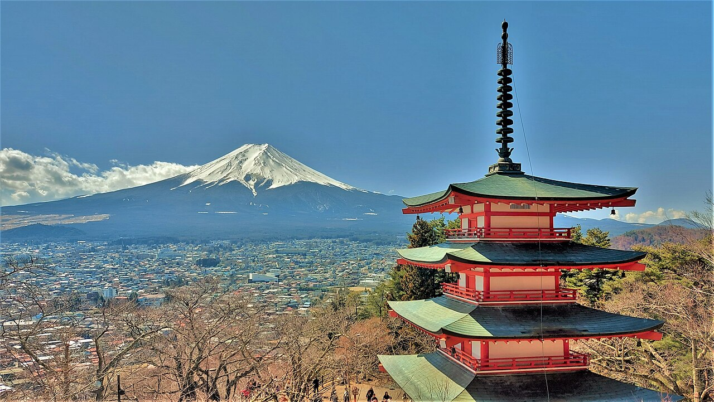

Япония

Япония — контраст высшего пилотажа: неон Синдзюку против тишины храмов, синкансэн против чайной церемонии, и всё это работает одновременно, не мешая друг другу. Токио: Сибуя с переходом, виденным в каждом клипе, храм Мэйдзи в парке, где город внезапно затихает, и Асакуса вечером, когда бумажные фонари включают без причины — просто потому, что вечер. Киото — второй слой: Фусими-Инари с тысячами красных ворот, идущих в гору как лестница из открыток, Кинкаку-дзи — золотой павильон над озером, бамбуковая роща Арасияма, где стебли поют на ветру. Фудзи встаёт у окна синкансэна, если сесть на правильную сторону — места E, примерно три часа пути из Токио в Киото. Еда: суши у прилавка, рамен в переулке на шесть мест, омакасэ, где повар решает за вас — и решает лучше. Наличные держите наготове: храмы и мелкие лавки любят бумажник старой школы. Сакура цветёт в конце марта — бронируйте зимой. Каждый день что-то удивляет, и Япония никогда не делает это громко.
Что знать перед поездкой
- JR Pass — до прилёта, выгоднее
- Наличные берите: храмы и мелкие лавки любят только их
- Сакура — конец марта: бронируйте зимой